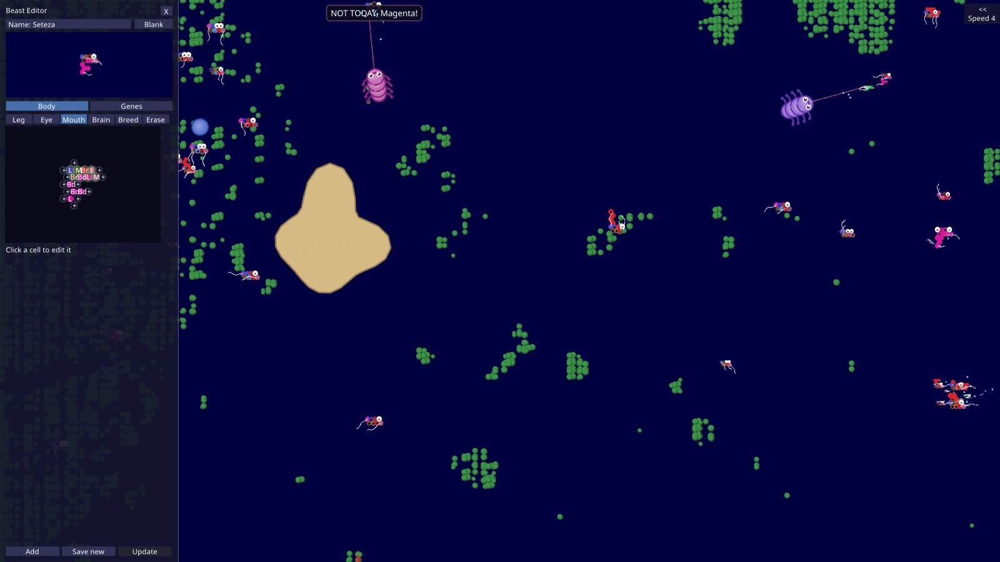
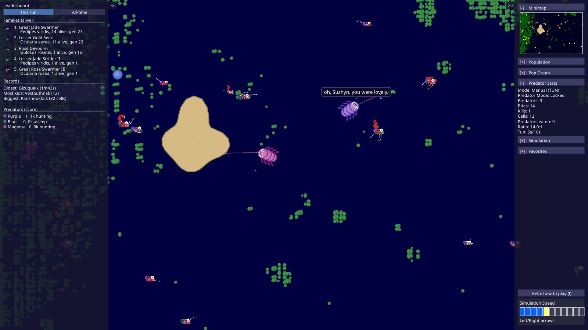

1Getting started
Beasts are little creatures made of cells. They swim, eat the green algae, breed and evolve on their own, while tardigrades hunt them. You don't have to do anything: a pond left alone keeps going. Or lend a hand, and see what evolves.
Your first five minutes
- Watch for a moment. Each world starts with a crowd of random beasts and a little algae. The ones that find food grow and breed; the others starve or get eaten.
- Plant some algae. Right-click (or tap with the Algae tool) to plant a patch. It grows out from where you clicked, then keeps spreading.
- Add a beast. Click (or tap with the Beast tool) anywhere on the water.
- Pause and look closer. Press P and hover over a beast to see its card: its name, family, cells and genes. Press F to keep it as a favorite.
- Take over the hunter. Press A to turn off auto hunt, steer the predator with , and ., and bite with Space.
Where to play
On an iPhone or iPad, open the game in Safari, tap Share, then Add to Home Screen. It then opens full screen, like an app.
2Controls
On a Mac, shortcuts use Cmd; on Windows and Linux, Ctrl. In the tables they're written Cmd/Ctrl.
Mouse
| Do | What happens |
|---|---|
| Click | Add a beast |
| Right-click | Plant a patch of algae (on a Mac trackpad, click with two fingers) |
| D + click | Drop a mud island |
| D + right-click | Sink the island under the mouse, with any islands joined to it |
| Hover, while paused | Show a beast's card |
| Mouse wheel | Scroll the Favorites list, the leaderboard or a long help page |
The pond
| Key | What it does |
|---|---|
| P | Pause or play |
| ← → | Slower or faster (speeds 0 to 10; the game starts at 4) |
| ↑ ↓ | Room for more or fewer beasts (the most the pond can hold) |
| T | Paint mode: hold the mouse button to keep adding beasts or algae along the way |
| B | Start a swarm: every beast that can swarm does |
| Shift + N | Start a new world (it asks first; Y yes, N no) |
Predators
| Key | What it does |
|---|---|
| A | Auto hunt on or off for your predator (off: you steer it) |
| , . | Steer your predator; hold Shift to back up |
| Space | Bite |
| ] [ | Add a predator (up to 8), or remove the newest |
| M | How auto predators hunt: Locked on one beast, or Opportunistic, switching to closer ones |
Panels and tools
| Key | What it does |
|---|---|
| F (paused) | Keep the beast under the mouse as a favorite |
| E | Open or close the beast editor (while paused over a beast, it opens a copy of that beast) |
| Tab | Show or hide the leaderboard |
| H | Show or hide the side panel |
| / | The command line, for commands like !food C4 (see Streams and chat) |
| L | Names over beasts on or off |
| C | Creature chatter on or off |
| I | How to play; Tab goes on to About |
| Cmd/Ctrl + = - | Bigger or smaller text (panels grow and shrink with it) |
| F11 | Fullscreen |
| Esc | Close help or the editor, or leave fullscreen |
| Cmd/Ctrl + S | Save the world |
| Cmd/Ctrl + L | Load it |
| Cmd + Q | Quit (Mac). On Windows and Linux, close the window. In a browser, close the tab |
Touch
On a phone or tablet the touch controls show from the start. On a laptop with a touchscreen they appear at your first touch, and hide again when you move the mouse.
| Touch | What happens |
|---|---|
| Tap | Use the tool: Beast adds one, Algae plants a patch, Mud drops an island, Sink sinks one |
| Drag | Keep using the tool along your finger |
| Two fingers | Plant algae, whatever the tool |
| Hold on the water | Drop a mud island |
| Hold on an island | Sink it |
| Pause, then touch a beast | See its card; Keep makes it a favorite |
| Pause/Play, Slower, Faster | Pause and speed |
| Stick and Bite | Steer the predator and bite (shown while auto hunt is off) |
| Menu | Swarm, more or fewer predators, auto hunt, how they hunt, leaderboard, room, design a beast, names, chatter, side panel, text size, how to play, save, load, new world |
Typing names (in the editor or a favorite's name) and / commands still needs a keyboard.
3How beasts live
Nothing is scripted. Every beast is a little body of cells, and each cell does one job. Beasts that find food grow and breed; their children mix both parents' cells, with a few mutations. Over time, whatever works spreads.
The cells
| Cell | What it does | Looks like |
|---|---|---|
| Eye | Spots food within its range and turns the legs toward it | A white eye with a colored pupil |
| Leg | Pushes the beast the way it points | A white wavy line trailing off it |
| Mouth | Eats the food under it | A black dot that pulses |
| Brain | Makes the beast fertile (without one, only a 1 in 4 chance) | A black ring, white inside when well fed |
| Breeder | Grows new cells next to itself, so the body develops as the beast matures | A plain circle with a faint shadow |
| Plain | Nothing, but it still needs feeding | Invisible |
Growing up and breeding
- Every beast starts as a block of 8 cells. Breeders grow the rest of the body as it matures. Cells grown by breeders are never breeders themselves, so bodies can't grow forever.
- When two grown-up beasts that can breed meet, they have a child. It gets a mix of both parents' 8 middle cells and traits (size, color, leg length, eye range and more), with some mutations.
- Cells cost food. A beast that can't eat enough to feed all its cells starves.
Families and names
Each beast that starts a world, or that you add, founds a family. Children join their first parent's family, one generation further on. Pause and hover over a beast to see its three names:
Swarming
About half of beasts carry the swarm trait. When an awake predator comes near, they panic and flee together, and the panic spreads through nearby swarmers in a wave. Three inherited genes shape the flock: keeping their distance, matching each other's heading, and staying together. Predators find it hard to pick one beast out of a dense swarm, so they go for loners. Press B to set off a swarm yourself.
Chatter
Beasts and predators say short lines about what's happening to them, in speech bubbles. Each family has its own voice: deadpan, cute, dramatic, or (for brainy families) a nature documentary narrator. Press C to turn chatter off.
4Predators
The predators are tardigrades. They hunt beasts by sight, so they can't spot a beast hidden behind a mud island.
- Your predator is the first one, the original blue. It hunts by itself until you press A; then you steer it with , and . (or the stick, by touch) and bite with Space.
- More predators: press ] to add up to 8, each its own color. The extra ones always hunt on their own. [ removes the newest.
- Sleeping: a predator that goes too long without eating curls up into a dormant tun. A sleeping predator is prey: the others can hunt and eat it. If yours is eaten, the next one takes over.
- How they hunt (M): Locked predators chase one beast until it's eaten or gets away. Opportunistic ones switch to whatever's closer.
5Food, mud and more
Algae
Algae is what beasts eat. Right-click (or use the Algae tool) to plant a patch: it grows out to about the size of a beast over a couple of seconds, then seeds its edges and keeps spreading. In Paint mode (T), drag to plant a trail of patches.
Mud islands
Hold D and click (or hold your finger on the water) to drop a sandy island into the pond with a kerplop. Islands change how a world plays:
- Nothing can cross them, and nothing can see past them. Beasts can hide behind them, and several islands can close off a lagoon.
- Algae can't grow on them, but a fringe of beached algae along the shore makes a one-time snack, and fresh algae sprouts along the shoreline.
- Some islands stay until you sink them; others sink by themselves after a few minutes. Up to 12 landmasses at once.
- To sink one, hold D and right-click it (or hold your finger on it).
Speed and room
Use ← and → to slow the pond down to watch closely, or speed it up to see evolution happen. ↑ and ↓ set how many beasts the pond can hold. If your computer struggles, the game lowers that number by itself, removing the weakest beasts, and raises it again when there's room.
When things go wrong in the pond
A world never ends on its own. When beasts get scarce, a red banner asks for help ("Beasts are endangered!", "Last beast alive!", "Extinct!"), and an amber one asks for food when the algae runs low. Add beasts or algae and the same world carries on. To start fresh, press Shift + N; the game shows a summary of the world you left.
6The beast editor
Design your own beast, cell by cell. Press E, click Editor (E) in the side panel's Simulation section, or pick a favorite and click Edit. By touch, it's Design a beast in the Menu. The pond pauses while the editor is open.

- Start from something. A blank slate, a favorite, or (while paused) a copy of the beast under the mouse. The original never changes.
- Build the body. On the Body tab, pick a cell type (Leg, Eye, Mouth, Brain, Breeder, or Erase) and click a cell or a + on the grid. Click a cell to set its size and color, and for legs, eyes and breeders their own settings.
- Set the genes. On the Genes tab: whether it swarms and how strongly, whether it can breed, and one color for the whole body.
- Name it. Click the name to type one.
- Use it. Add, then click in the pond to place it (as many as you like). Save new keeps it as a favorite; Update changes the favorite you opened.
What children inherit: only the 8 cells in the middle of the body, marked with green rings. Breeders can only go on those cells. The rest of a body grows from breeders, so design those 8 carefully if you want your beast's line to last.
Warnings point out what a design lacks (no mouth: it can't eat; no legs: it can't move), but they don't stop you. Closing the editor throws away unsaved changes.
7Favorites
Favorites are beasts you keep. Every favorite joins the start of each new world, fully fed, alongside the random beasts.
- Keep one: pause, hover over a beast and press F (by touch, tap Keep on its card). Or click the green + next to a record on the leaderboard. Up to 50.
- See them: open the Favorites section of the side panel. Scroll with the mouse wheel or drag the scrollbar.
- Add a copy now: click the green + beside a favorite.
- Rename: click its name, type, and press Enter (Esc cancels).
- Edit: select it and click Edit to open it in the editor.
- Delete: select it, click the red ✕, then click it again to confirm.
Many favorites make crowded starts, since every one of them joins each new world.
8The leaderboard
Press Tab, or click the tab at the top left, to slide in the leaderboard.

This run covers the current world. All-time keeps the biggest families, record holders and best hunters from every world you've played.
9Streams and chat
When the pond is streaming live on YouTube, anyone watching can play along by typing commands in the chat. A faint grid (A to H across, 1 to 6 down) shows on the stream so you can aim.
| Command | What it does |
|---|---|
!food or !food C4 | Plant algae at a random spot, or in grid square C4 |
!beast or !beast C4 | Add a random beast |
!mud or !mud C4 | Drop a mud island |
!predator | Release another hunter (up to 8) |
!swarm | Start a panic |
!name Bob | Name a random beast. Named beasts talk more |
!family Bob's Gang | Rename the biggest family no one has named yet |
Each person can use each command once every 10 seconds. Commands do nothing while the pond is paused. A name filter keeps rude names off the stream.
Try them at home
You can run the same commands in your own game, no stream needed: press /, type the rest of the command (it starts with ! for you), and press Enter. ↑ recalls earlier ones; Esc closes it.
One extra command only works there: !keepalive 30 keeps the population topped up for 30 minutes, adding beasts and algae when numbers fall. !keepalive off stops it.
Stream your own pond
The desktop game can stream itself to your own YouTube channel, with viewers' chat commands. It's for the technically minded: it needs FFmpeg installed, a YouTube stream key, and the game launched from a terminal with -stream. Nothing goes live until you press Cmd/Ctrl + Y.
10Saves and settings
Press Cmd/Ctrl + S to save the world, and Cmd/Ctrl + L to load it. There's one save; each save keeps the one before as a backup. A new game always starts a new world, so load your save when you want it back.
Favorites, the all-time leaderboard and your text size are saved by themselves.
| Where | Your saves live in |
|---|---|
| Browser | Your browser's storage for this site. Clearing the site's data, or playing in a private window, loses them |
| Mac | ~/Library/Application Support/Beasts |
| Windows | %AppData%\Beasts |
| Linux | ~/.config/Beasts |
On a computer, that folder holds save.json (the world), favorites.json, leaderboard.json and settings.json. Copy it to back everything up.
11Troubleshooting
Clicking doesn't add beasts
Check that the pond isn't paused (press P), and that you're clicking on the water, not a panel. The pond may also be full: press ↑ to make room for more.
All my beasts died
Click to add new ones, or press Shift + N for a fresh world. If they keep starving, plant more algae; if they keep getting eaten, remove a predator with [.
The game is slow, or beasts keep disappearing
When your computer can't keep up, the game lowers how many beasts the pond holds and removes the weakest. To help it, make the window smaller, lower the speed with ←, or remove some predators. The desktop game runs faster than the browser version.
My phone says to turn it sideways
The pond plays in landscape. Turn your phone sideways, and turn off rotation lock if it doesn't flip.
My saves are gone in the browser
Browser saves live in the browser's storage for this site. Private windows, clearing site data, or some browsers' storage limits can remove them. For saves that last, use the desktop game.
The panels cover the pond
Press H to hide the side panel and Tab to hide the leaderboard. Smaller text (Cmd/Ctrl + -) makes the panels smaller too.
A shortcut doesn't work in the browser
Browsers keep some shortcuts for themselves, which is why a new world is Shift + N. Click the game first so it has focus, then try again.
Still stuck, or found a bug? Email apps@marmonte.ai with what happened and what you were playing on (browser or desktop, and which computer, phone or tablet). You can also message Andrew on LinkedIn or X.